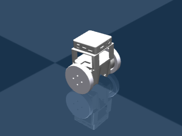
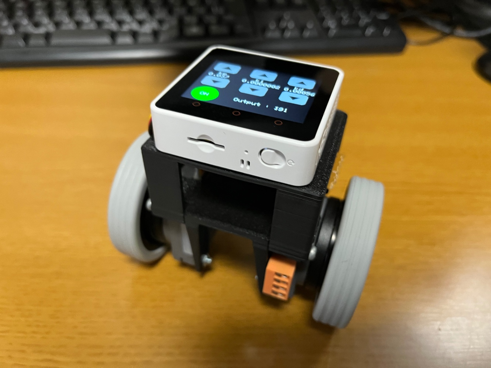

製作背景
近年では、複雑モデルの制御を行う際には深層強化学習を用いることが多いらしく、その理論理解と実践的な経験を積むために制作しました。
システム構成
・強化学習ライブラリ：Stable-baselines3
・強化学習アルゴリズム：PPO
・シミュレーション環境：Gymnasium
・物理シミュレーション：Mujoco
下の写真のような、倒立振子を制御(Sim2Real)することを目指しました。

制作したロボット
動作
シミュレータ上では以下のように動作しました。
現在の問題と今後の展望
現在シミュレータ内では出力値がバンバン制御のような挙動を示しています。そのため、Sim2Realがうまくいっていません。以下のような点に注意しながらデバックをしていきたいと思います。
・モデル誤差
・報酬設定(電流値に対するペナルティ)
・各種パラメータにノイズ付与
プロジェクトの内容は以下のURL(zenn)に掲載しています。よろしければご覧になってください。